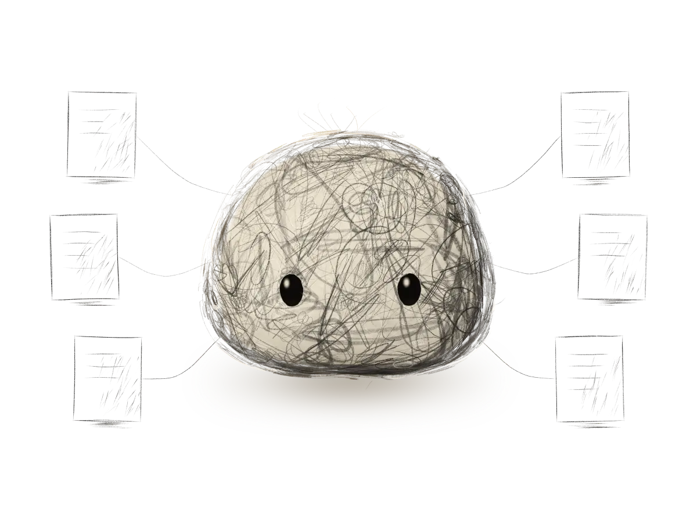
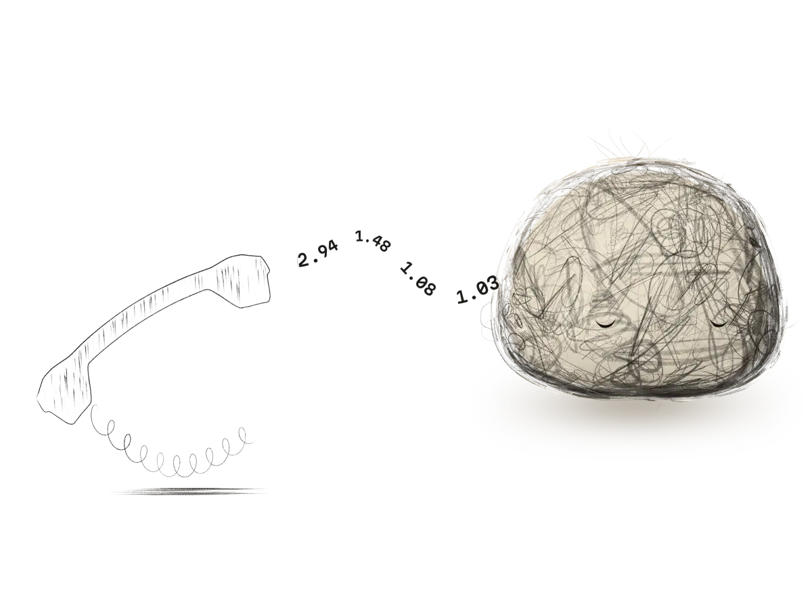
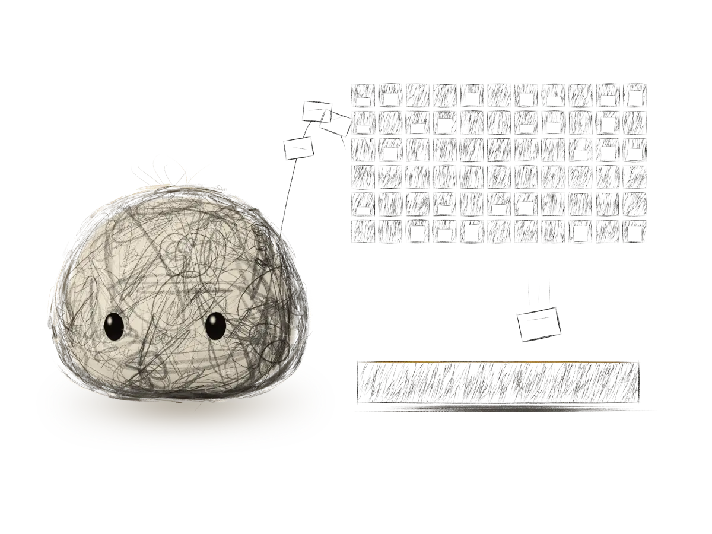

AI agents · Fixed-price milestones · Evenings and weekends, Mountain Time
I build AI agents that read the whole thread, pick up new skills, run a small crew, work in a harness, and just work.
It doesn't move until you do.
An agent reads your messages, keeps your records current and drafts the reply. The draft waits until you say send.
Look closer. Every line is a row of numbers: real weights from the classifier further down this page.
Three drafts are waiting for you.
The agent wrote them. It can ask for approval, check on it and collect the approved text. It has no tool that can approve, so an instruction hidden in a stranger's email has nothing to pull.
These drafts run in your browser with the same rules as approval-gate, my open-source MCP server: TypeScript, 15 tests, CI. It works with any agent that speaks MCP.
Not everything needs a language model.
This classifier sorts a customer message into one of 150 pigeonholes, in your browser, with nothing sent to a server. When it isn't sure, the message goes to the tray for a person. It knows banking, travel, home and small talk, because that is what its public training set covers.
Loading the model…
I trained three models on CLINC150. The most accurate one was the wrong pick: it let 27% of off-topic messages through with confidence. The plain one made about half as many wrong moves, and it is the one running here.
| Model | In-scope accuracy | Off-topic caught | Wrong automatic moves |
|---|---|---|---|
| TF-IDF + logistic regression | 92.5% | 89.9% | 3.7% |
| Hand-written neural network (NumPy) | 88.4% | 88.3% | 3.9% |
| MiniLM embeddings + logistic regression | 95.3% | 73.0% | 7.1% |
Results, training code and the hand-written network: intent-router.
What I've built.
These are drawings, made by the same code that draws the top of this page. The production systems live inside companies and can't be shown.
-

An MCP layer that 200+ people use every day
A VS Code extension and MCP server that connect an AI assistant to Jira, Confluence, GitHub, Jenkins, Snyk and OpenShift at a large financial services company. In production on 12+ teams. Over 10,000 hours of manual story writing saved so far.
MCP · VS Code · Jira · Confluence · GitHub · Jenkins · Snyk · OpenShift
-
The back office of my own small business
An agent system that reads email, SMS and WhatsApp, keeps the CRM and task list current, puts commitments on the calendar, fills PDF contracts and files documents. Client replies wait as drafts until a person sends them. It runs every day, for a real business, with real customers on the other end.
Email · SMS · WhatsApp · CRM · Calendar · PDF forms · Filing
-

A voice agent you can phone
A personal experiment in Python with Twilio and a real-time speech model. It holds a conversation and calls tools to book appointments. A pause that is fine in chat makes a phone call feel broken, so latency drove every design choice. A working experiment, not a product.
Python · Twilio · Real-time speech · Tool calls
-
approval-gate
The MCP server behind the first demo. Three tools: request approval, check on it, claim the approved text. None of them approves. Requests carry an idempotency key, approved text can be claimed once, and the log is append-only and hash-chained so a casual edit shows up.
TypeScript · 15 tests · CI · Open source
-

intent-router
Three models on CLINC150, judged by the one number that matters when a classifier acts on its own: how often it makes a wrong move. The hand-written NumPy network is in there too, with its gradients checked against a numerical estimate. It loses to logistic regression, which is the honest result.
Python · NumPy · CLINC150 · Open source
Both repos, and most of this page, were built with Claude Code. That is how I work now, and I'd rather say so.
How I work.
Six years of software development, mostly in regulated financial services. AWS Certified Solutions Architect. BASc, University of Waterloo. I work in the harness you already use, or build one from scratch.
We agree on a scope and a fixed price. You fund a milestone. You get working software, tests, a written handover and a recorded walkthrough. I work evenings and weekends, Mountain Time.